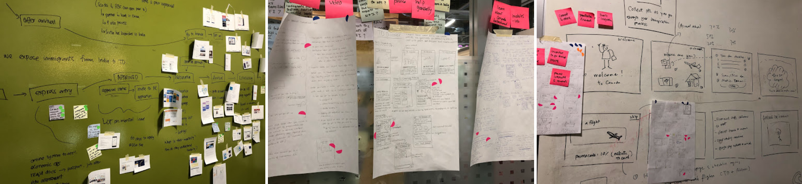
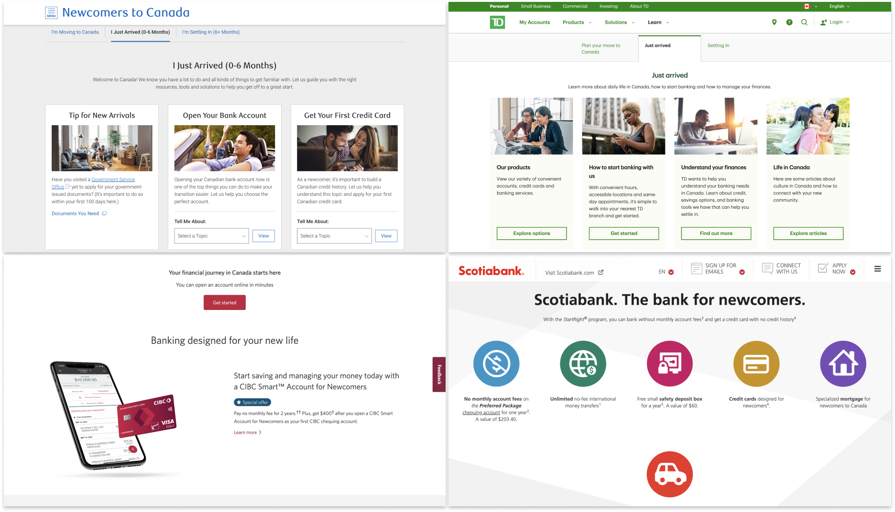
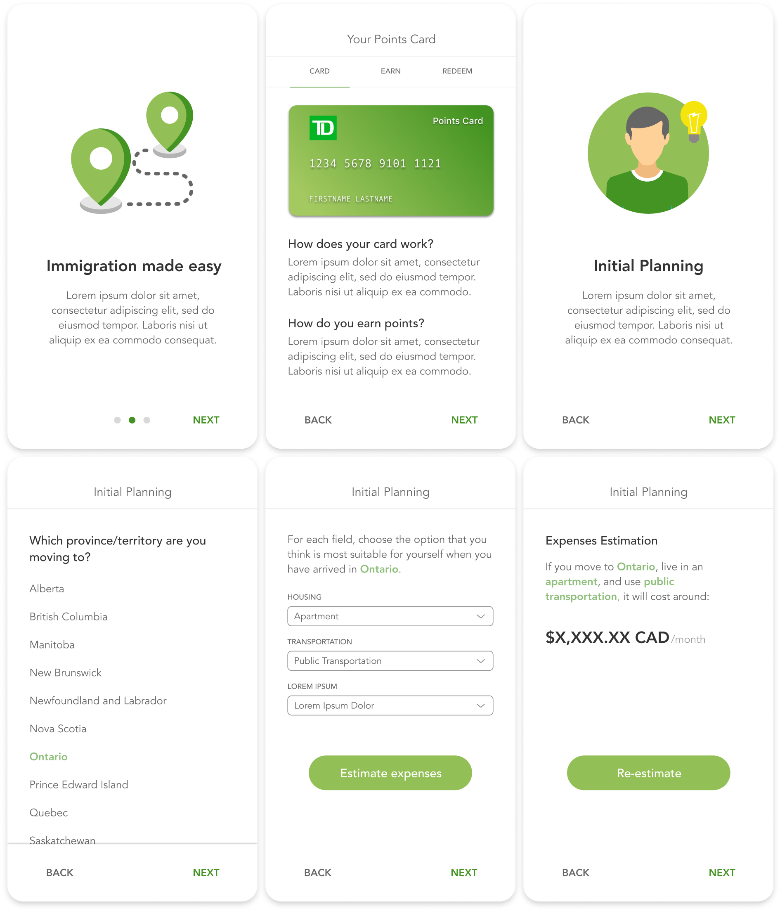
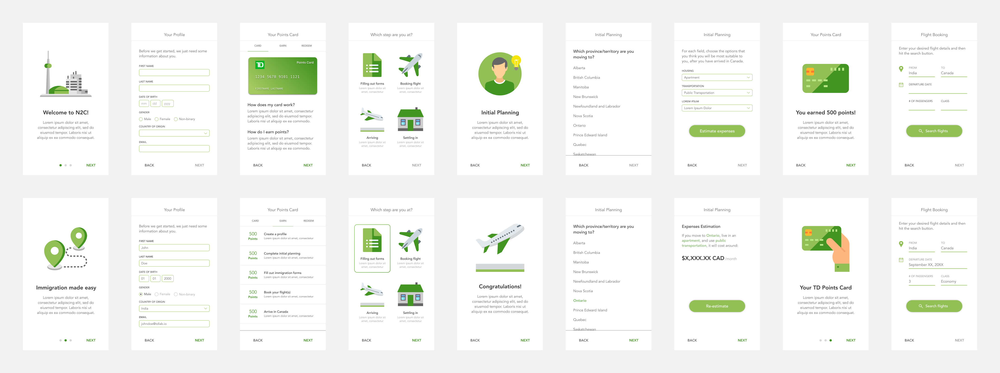
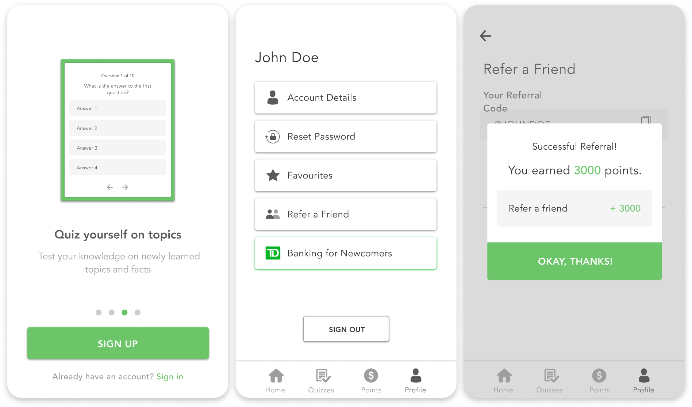
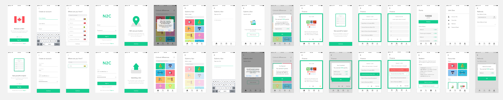

Context
TD Lab is an innovation workspace within TD Bank, exploring emerging
tech & customer experiences.
During my internship, I led the design of a mobile app, Newcomer to Canada, that assists
immigrants settling in — by teaching them about cultural differences
between their home country and Canada.
Problem
TD Bank’s Everyday Banking team presented our lab with the opportunity
statement below:
“Canada is expected to welcome 1 million new permanent residents over
the next 3 years. How might we develop a new digital experience to
incentivize these residents to make TD Bank their bank of choice?”
Goal
Canadian Newcomers
-
To have a stress-free immigration process, including opening a
Canadian banking account
TD Bank
-
To ease the immigration process and gain more customers (i.e. open
more bank accounts)
A design sprint was held to scope the project. We researched existing
competition, mapped the journey of Canadian newcomers, selected
primary users, and brainstormed potential solutions by sketching
wireframes and facilitating team discussion.

Competitive Analysis
To better understand the types of products and services TD Bank and
the other Big Five banks (RBC, BMO, CIBC, and Scotiabank) were
currently offering to recent immigrants, we reviewed their newcomer
packages on their websites.

Key Insights
-
Every bank offered a newcomer package with perks for opening an
account with them (ex. no monthly and/or international transfer
fees, cash bonuses, special credit cards, etc)
-
Some banks also provided checklists for pre-arrival, just arrived,
and setting in
Primary Users
Indian immigrants were chosen as the primary users for the following
reasons:
-
They represent ~20% of all recent immigration to Canada
-
They are the youngest on average and have the highest amount of
immigrants in their twenties and thirties — characteristics of a
population that are beginning their banking journey
-
They place a focus on large financial obligations (ex. buying a
vehicle or the birth of a child)
Initial Design
The first iteration was an app that guided users step-by-step through
the immigration process. It would assist with tasks like completing
important documents, estimating expenses, booking flights, and more.
By completing tasks, users would earn points — redeemable for cash by
opening a TD Bank account.


User Research
While the initial design seemed useful, we couldn’t be sure without
actually consulting the end-users. To ensure we were correctly
approaching the problem, I conducted user interviews with six Indian
immigrants who had moved to Canada within the last five years.
Key Insights
-
If a user needed information about the Canadian immigration process,
they would simply do a quick google search
-
The most trustworthy sources of information were Government of
Canada websites — it was unlikely any other sources would be used
In other words, there was little reason for users to download a
non-Government of Canada app to find information that was more
accessible and trustworthy through a couple of clicks. Additionally,
providing immigration information could pose liability problems if it
was not constantly accurate and updated.
A Step Back
With these findings, we decided to re-evaluate our approach by
redefining the product. We needed to create a product that was more
casual, but still provided relevant and useful information —
effectively differentiating itself from the existing competition.
New Design
Enter the next iteration, a mobile app that taught users about the
cultural differences between their home country and Canada. A
customized experience is created by providing tailored information for
the user based on their home country and current location. Like the
first iteration, there would be a rewards system to earn points that
could be redeemed for cash by opening a TD Bank account.


Every day Canadian newcomers experience several pain points related to
niche topics they haven't learned about. For example, "How much should
I tip in Canada? What even is tipping? Why is milk bagged?" Many
newcomers don’t know what they don’t know and that isn't easy to
search for. By providing information on these niche topics (i.e.
cultural differences), we can alleviate these daily difficulties,
making the move to Canada easy, welcoming, and stress-free.
Usability Testing
After designing the UI and a high-fidelity prototype, it was time to
validate the idea. I usability tested the app with same six Indian
immigrants from the original user interviews.
Key Insights
-
The most important topics in order: Laws, Finance, and Housing
-
The least important topics: Entertainment and Sports
-
Users wanted to receive reccomendations (ex. suggesting nearby
places of worship)
Overall, user feedback of the app was positive — several users
mentioned that if the app existed when they had first moved to Canada,
they would have downloaded and used it. They also thought the
opportunity to earn and redeem points for cash was a great incentive
to invest time in the app, and eventually open a TD Bank account.
Users also mentioned many personal anecdotes regarding niche things
they didn't know about when they immigrated, so we knew the concept
showed real value.
Results
Incorporating feedback from the usability testing interviews, the
final iteration was improved upon — I added a complete onboarding
flow, profile, and a more in-depth rewards system (i.e. more ways to
earn points/cash). Following this, Newcomer to Canada was fully
developed as a mobile iOS app by the engineering team and presented to
EVPs and SVPs at TD Bank Tower in Downtown Toronto.
Priority Metrics and KPIs
-
Number of sign-ups, points redeemed/accounts opened, and referrals
-
Topics and quizzes with the most engagement (active minutes and
click-through-rate)